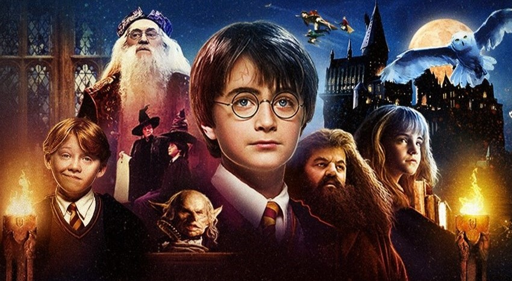
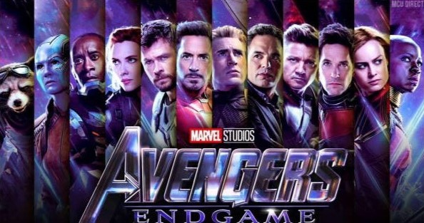
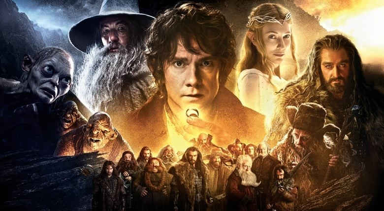
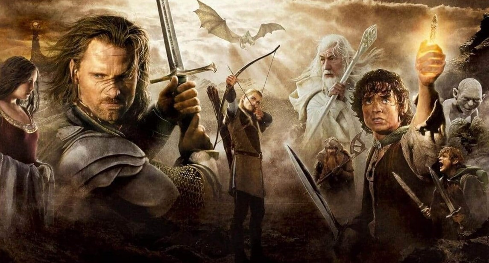
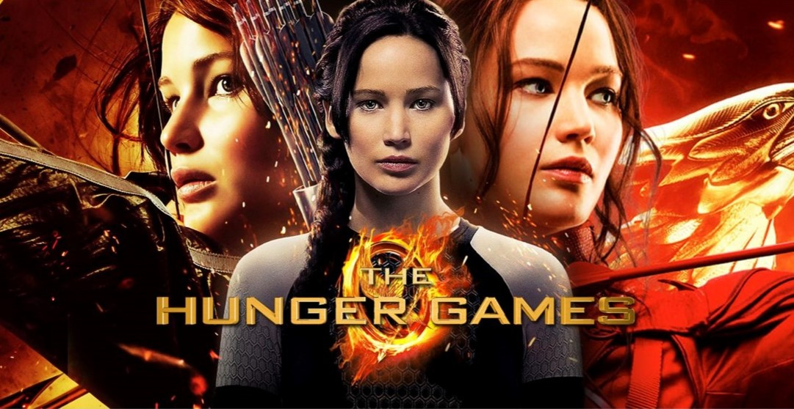

1. Harry Potter
After the death of his parents, young Harry Potter lives with his aunt and uncle, where he is treated badly and has to endure constant bullying from his spoiled nephew. On his 11th birthday, Harry learns that his parents were powerful wizards and that he too has unique magical powers. He leaves for a British boarding school for student wizards, where he makes new friends who, like him, have special powers. Despite his intrepid deeds and valiant adventures, all he really wanted was to enjoy Hogwarts with his friends and be left alone by Nasty Teachers and Dark Wizards and their Nefarious plans. Harry Potter had a vicious case of being at the wrong place at the wrong time. Always.

2. Marvel movies
It is difficult to summarise this because Marvel has so many movies. But they are basically all super hero movies and over the course of the years all the superheroes form a team and fight evil togheter. This team is called the Avengers and super heroes like Iron Man, Captain America, The Hulk, Black Widow, Thor and many more are in it. The first villian they fight together is Loki. After that came some more Avengers movie which have now ended with Thanos as the villain. But besides the Avengers movies most of the superheroes have seperate movies themselves. Stories about how they became superheroes and stuff.

3. The Hobbit
Set in a fictional world this tale follows the quest of a hobbit by the name Bilbo Baggins. He led a very normal, boring live until one day Gandalf, who is a known wizard, appears and startles him. Gandalf asks Bilbo if he wants to go on an adventure but he declines. However a few days later Gandalf arrives with 13 dwarves at Bilbo's house. They want Bilbo to help them. The Dwarves leader tells him about a family treasure being guarded by a dragon. They want to recover the treasure. After some thinking Bilbo decides to join them. They all set off together on the way to their destination, The Lonely Mountain. On their journey they meet a lot of obstacles.

4. The Lord of the Rings
The Lord of the Rings is a sequel to The Hobbit. A hobbit called Frodo Baggins receives a magic Ring of Invisibility from his uncle Bilbo. Frodo learns that the ring has the power to control the entire world and he discovers to corrupt its owner. A fellowship of hobbits, elves, dwarfs, and men is formed to destroy the ring by casting it into the volcanic fires of the Crack of Doom, where it was forged. They are opposed on their harrowing mission by the evil Sauron and his Black Riders. They also meet a lot of obstacles during their journey.

5. The Hunger Games
This is a story about a tough teenager who hunts to provide food for her family. She lives with her younger sister and their mother in Disctrict 12. There is an annual event named The Hunger Games. In this event, each district is supposed to randomly have two individuals (a girl and a boy) drafted after which they will be taken to an arena where they are supposed to fight until death. There can only be one winner. Things go wrong when Katniss's sister is chosen. Katniss doesn't want to lose her sister so she volunteers to go in her place in the company of the other tribute, Peetah. The big question now is if she will survive.
